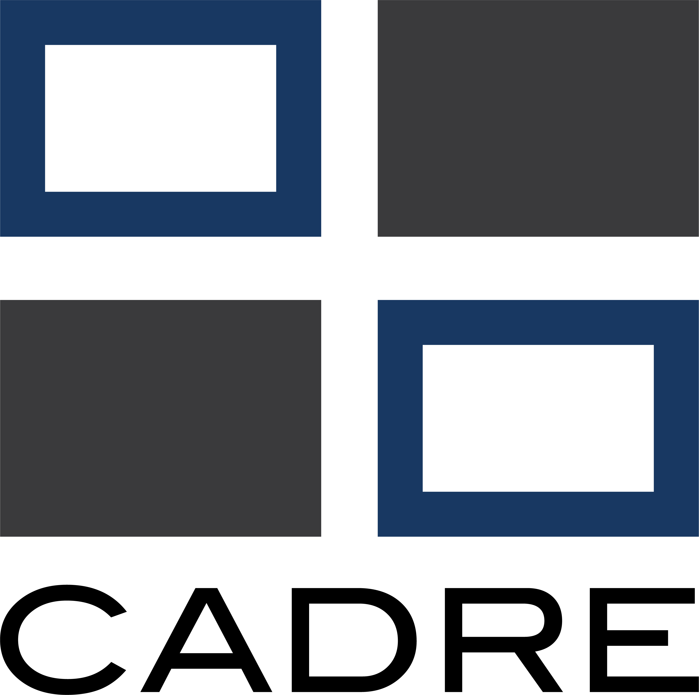

Pack example
Family adventures, dens, and a welcoming first visit.
Explore the Pack website
Start with the questions a new family asks: who you are, where you meet, and how to visit.
These fictional examples accompany Brian Hueske’s 2026 University of Scouting class. They use the same public-site styles, fonts, photography, and components as Pack 39 in Azimuth without connecting to its member records or services.
Family adventures, dens, and a welcoming first visit.
Explore the Pack websitePatrols, outdoor skills, and youth leadership.
Explore the Troop websiteChoose a program, edit the page’s copy and images, and add your unit logo. Preview it on phone and desktop sizes and choose a download for your host.
Make it yoursYour edits and images stay on this device when draft saving is enabled. Download a settings backup for another device; nothing is uploaded to a unit account.
A static website with your information, images, and a contact form connected to your unit’s hosted form service. A website helper can publish the downloaded index.html on a static host. Connect and test the contact-form service, public calendar, and unit application links before publishing. Read the setup guide.
Choose WordPress for an editable pattern plus images, or Squarespace for a guided recipe with your copy and images. Both require native contact-form setup in the destination editor. These packages are not complete themes and do not reproduce the static layout exactly.